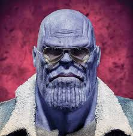

1. Thanos
Feared across the entire Marvel Universe. His calm, philosophical nature makes him even more intimidating. Even without the Infinity Gauntlet, his presence alone demands respect.
Some Marvel characters have an aura that commands respect, fear, or admiration. Below are the top 5 characters with the most commanding presence in the Marvel Universe.
Feared across the entire Marvel Universe. His calm, philosophical nature makes him even more intimidating. Even without the Infinity Gauntlet, his presence alone demands respect.
His legacy of innovation and sacrifice makes him one of the most respected figures in Marvel. His aura is one of confidence, leadership, and unmatched style.
The ultimate leader and symbol of hope. His aura commands respect, loyalty, and admiration from both friends and foes.
A literal god, yet he fights alongside mortals. His aura is one of divine power, charm, and an epic warrior spirit.
A silent warrior with a haunted past. His transformation from villain to hero adds depth to his presence.